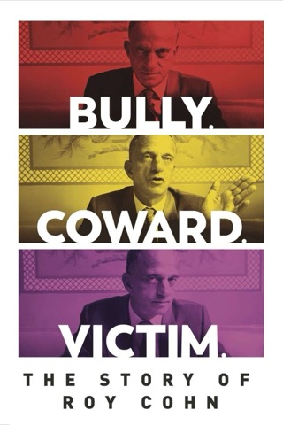
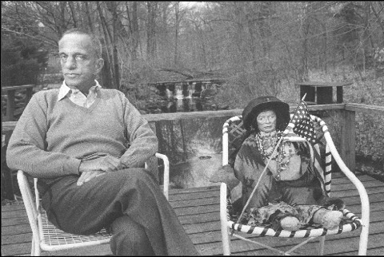

About the film

Legendary and controversial attorney Roy Cohn was a power broker in the rough and tumble world of New York City business and politics. Senator Joseph R. McCarthy’s top counsel during investigations into Communist activities in the 1950s, Cohn is also known for being Donald Trump’s former personal lawyer, fixer and mentor.
Focusing on key periods of his life, and drawing on extensive, newly unearthed archival material, director Ivy Meeropol examines the man who has both repelled and fascinated her for much of her life. Cohn, who prosecuted her grandparents, Julius and Ethel Rosenberg, in what became known as the “atomic spies” case; obtained their convictions in court and then insisted on their executions.
At the festival
- 2019 DC Premiere · Saturday, October 12, 2019 · 2:15 PM · Naval Heritage CenterPost-screening discussion to follow with director
More films on these topics
 Crime & ParodyWill Thwaites2026 · 88 min
Crime & ParodyWill Thwaites2026 · 88 min The Black SwanMads Brügger2025 · 90 min
The Black SwanMads Brügger2025 · 90 min- The Pegasus projectLaurence Topham2021 · 4 min
 United States vs. Reality WinnerOPENING NIGHT: United States vs. Reality Winner2021 · 94 min
United States vs. Reality WinnerOPENING NIGHT: United States vs. Reality Winner2021 · 94 min MLK/FBISam Pollard2020 · 104 min
MLK/FBISam Pollard2020 · 104 min Desert OneBarbara Kopple2019 · 108 min
Desert OneBarbara Kopple2019 · 108 min